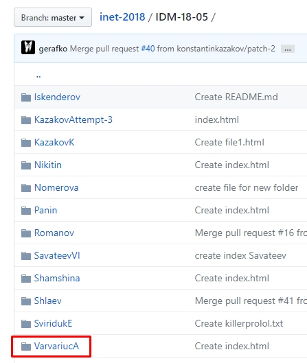

- Личный репозиторий
- Репозиторий группы
- Репозиторий курса
- Экзаменационные билеты
- Единый деканат
Учебный график
Срок 1-го модуля 22.10-04.11 Срок 2-го модуля 10.12-23.12 Срок сдачи зачетов и практик до 30.12 Экзаменнационная сессия с 31.12 по 20.01
Лабораторная работа №1: Экосистема разработки программ с открытым кодом
В рамках первой лабораторной работы были выполнены следующие задачи:
1. Была создана учётная записать на сайте GitHub.com.
2. Был создан личный репозиторий VarvariucA.github.io.
3. Было создано разветвление(fork) репозитория курса (stankin/inet-2018) в личный репозиторий (varvariuca/inet-2018).
4. В репозитории курса в папке группы была создана личная папка VarvariucA.
Скриншоты
